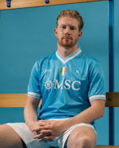
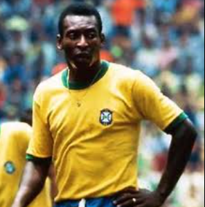

Catálogo com as camisas mais icônicas da história do futebol

Relembre conquistas históricas a partir de camisas
Viaje no tempo, visitando momentos marcantes no futebol
Saiba o preço de suas camisas e analise quem também gostou de um manto marcante do futebol
Conheça os designers que criaram camisas icônicas da história do futebol
Revolucionou o design esportivo ao criar uniformes modernos e marcantes.


Criou visuais minimalistas que marcaram gerações no futebol europeu.

Use nossa calculadora inteligente de precificação e descubra quanto vale aquela camisa histórica.
Preço Estimado
Um momento histórico eternizado através de uma camisa icônica

Muito Alta🏆 FINAL DA COPA DO MUNDO - MÉXICO 1970
A icônica camisa amarela usada por Pelé na conquista do tricampeonato mundial. Esta peça representa um dos momentos mais gloriosos do futebol brasileiro.
Ano
1970Jogador
PeléMomento
Final da CopaResultado
Brasil 4x1 ItáliaValor Estimado
Cadastre-se agora e tenha acesso ao dashboard completa
Criar Conta Gratuita